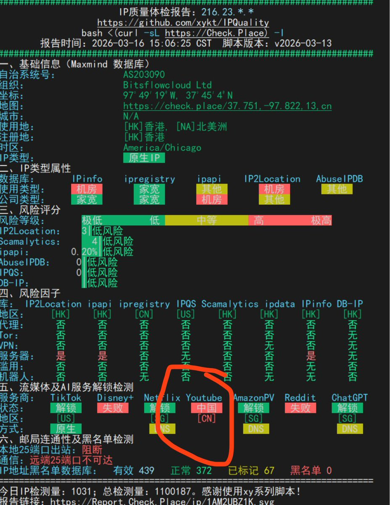
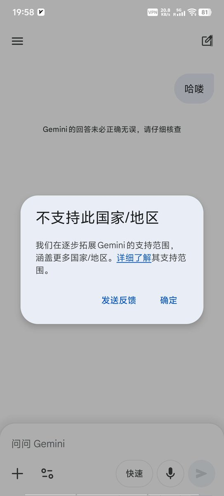

奶昔🥤
@realNyarime
@legacyvps 这不就送中了吗？
不过送了也好，因为我没开过YouTube Premium会员，还可以免广告！


小墨同学
@legacyvps
很多人明明使用的是美国VPS，但是发现访问AI还是出现了无法访问的问题。
这有可能你的IP，被谷歌定位成了CN，很多AI服务都被限制了。
可以运行一下这个脚本，查看是不是IP定位有问题，重点看Youtube的是不是CN还是US。
IP解锁脚本
bash <(curl -sL https://t.co/0sdacVE9LN) https://t.co/WDQiTcTWn4